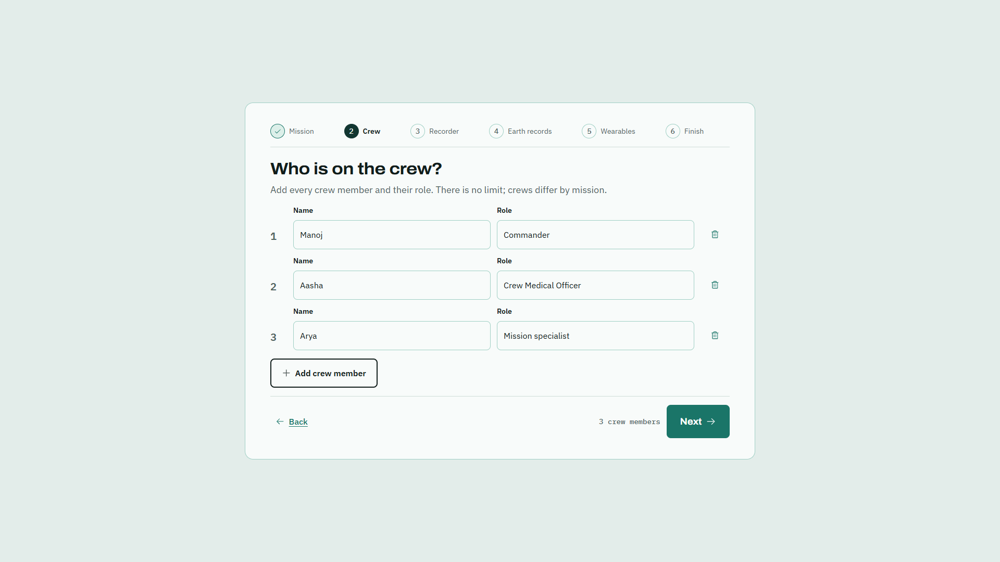
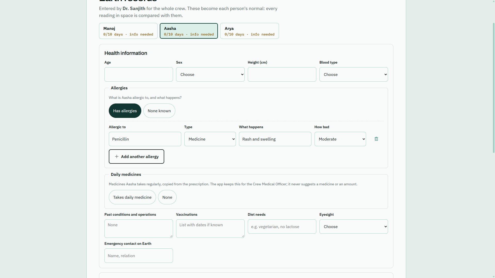
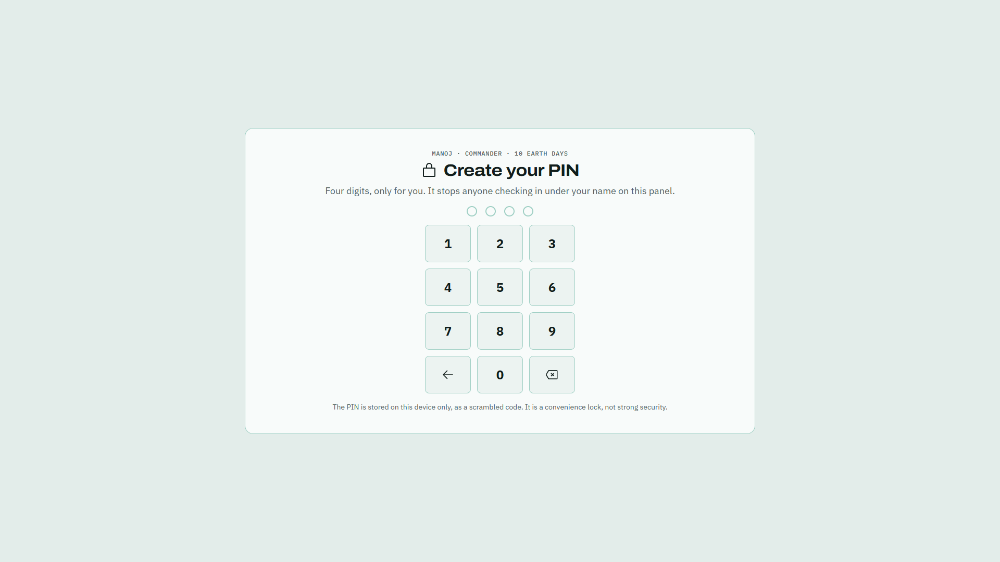
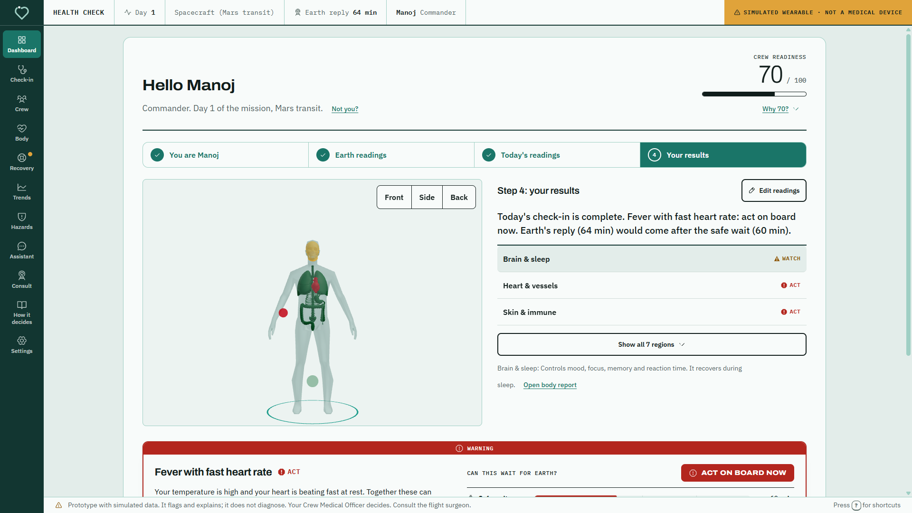
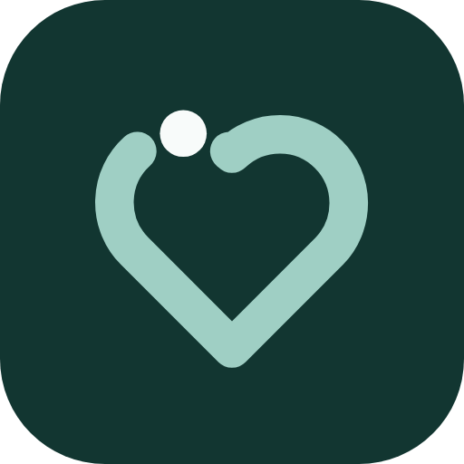

Team Spades
Create Health Monitoring Software for Astronauts on Space Missions
2026 NASA Space Apps Challenge
2026 NASA Space Apps Challenge
22 minutes each way








Try the demo in your browser
Live demo and desktop applordxmanoj.github.io/Nasa-space-app
Sanjith S · Manoj S · Alan Jacob Sam S · Aiswarya S
Prototype with simulated data.
Prototype with simulated data.
AI-GENERATED VOICE · KOKORO TTS
SIMULATED DATA · NOT A MEDICAL DEVICE
We are Team Spades. On Mars, Earth's answer takes up to 22 minutes each way.
Before launch, a doctor records each astronaut's normal, allergies and daily medicines.
In space, each crew member signs in with a PIN and checks in every day.
A fever Earth cannot answer in time: act on board now. The whole crew is alerted.
Try the voiced demo in your browser, or install the desktop app.